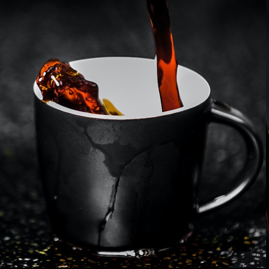
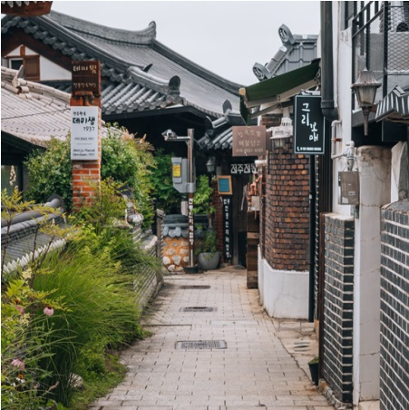

I'm Piotr.
a programmer.

I come from an IT background, where I worked in an authorized laptop repair service as a Quality Controller.
Additionally, I have experience as an English Teacher, working with children aged 3 to 14 years old.
Currently, my ambition is to become a programmer, and I am actively learning and exploring the following technologies:
I am dedicated to expanding my knowledge in these areas and continue to invest time each day in my learning journey.
I am a Polish professional based in Wrocław, Poland. Surprisingly, despite being in my home country, English is the primary language my wife and I use for communication.
My passion for coffee has driven me to expand my knowledge in the field. I have successfully completed two courses accredited by the Specialty Coffee Association of America (SCAA): Barista Skills Foundations and Introduction to Coffee.
When it comes to adventures, I occasionally embark on journeys around Europe and Asia.